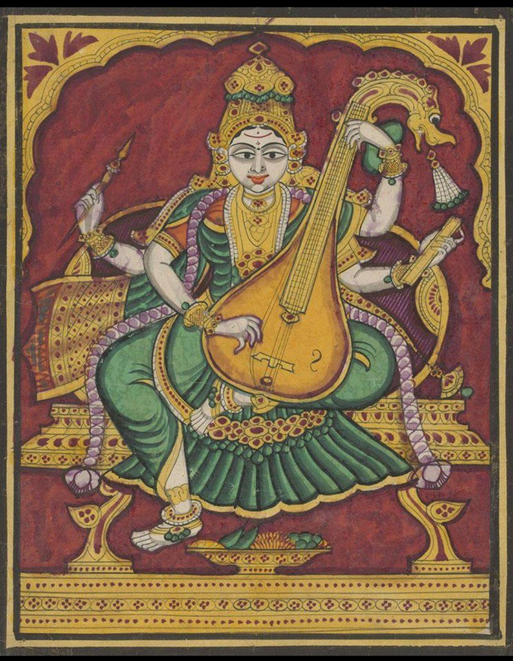

Mysore Painting
Origin: Mysore, Karnataka
- Delicate outlines and finely detailed figures
- Ornate jewellery, crowns and decorative arches
- Gold embellishment over raised gesso work
- Mainly religious and mythological subjects: Hindu gods, goddesses and epic scenes
- Developed from Vijayanagara painting and was supported by the Wodeyar rulers of Mysore